Data pipelines
Ingesting databases, spreadsheets, JSON, and CSV, then cleaning and standardizing them with Python and T-SQL.
Information Systems · ITS
Aspiring Data Engineer
I design data pipelines and warehouses that turn raw, scattered sources into data people can trust.
About
I'm Lenggo, a 3rd-year Information Systems student at Institut Teknologi Sepuluh Nopember (ITS), focused on data engineering: ingesting data from multiple sources, cleaning and modeling it in layers, and serving it for analytics.
I've built a Medallion lakehouse, a SQL Server data warehouse, and a data pipeline for landslide classification. My background in analytics and UI/UX design keeps me focused on the people who use the data at the end of the pipeline.
Ingesting databases, spreadsheets, JSON, and CSV, then cleaning and standardizing them with Python and T-SQL.
Bronze, silver, and gold layers feeding star and galaxy schemas built for analysis.
Deduplication, standardization, and checks that catch problems before they reach a report.
Power BI dashboards built on top of the warehouse, so the data finally gets used.
Selected projects
Select a project to read the full case study.
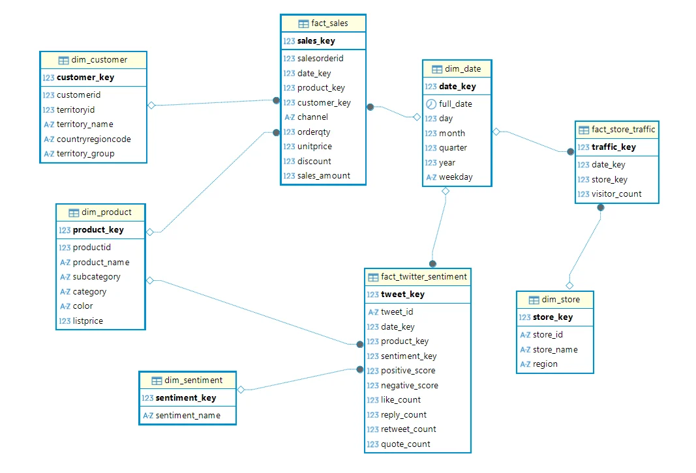
A Medallion lakehouse that unifies PostgreSQL, Excel, JSON, and CSV sources, feeds a galaxy-schema warehouse, and powers three Power BI dashboards.
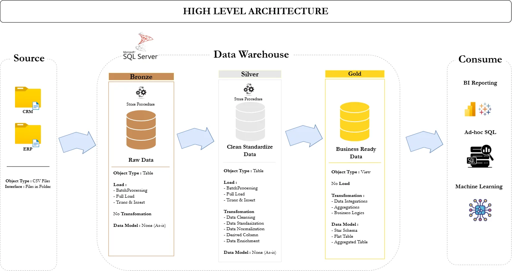
A Bronze–Silver–Gold warehouse in T-SQL that integrates CRM and ERP data from six CSV files into a star schema, backed by data-quality checks.
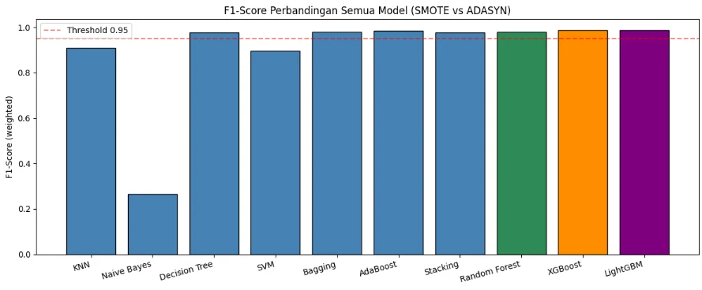
An end-to-end pipeline from 3,477 raw BNPB disaster records to geocoded, satellite-enriched sub-district features, followed by a ten-model comparison on an extremely imbalanced target.
Beyond data engineering
I also design user experiences, which keeps me thinking about the people on the other end of the data.
Contact
Always happy to talk about data engineering, projects, or collaboration.
Team project · Data lakehouse course
One platform for data that lived in four different places: online sales in PostgreSQL, offline sales in Excel, customer reviews in JSON, and store visits in CSV. Everything flows through Raw, Silver, and Gold layers into a galaxy-schema warehouse and Power BI.
Company data rarely sits in one place or one format. Online transactions live in an operational database, branch sales arrive as spreadsheets, and external signals such as social-media reviews or store-visit counts come as flat files. Analyzing them together is hard without a common home.
This project builds that home: a lakehouse with Raw, Silver, and Gold layers, loaded into a dimensional warehouse and visualized in Power BI.
| Source | Format | What it holds |
|---|---|---|
| AdventureWorks online sales | PostgreSQL | Online sales transactions from the operational database |
| Offline sales | Excel (.xlsx) | Offline orders extracted from AdventureWorks to simulate branch spreadsheets |
| Twitter reviews | JSON (30 daily files) | Customer reviews with like, reply, retweet, and quote counts |
| Store traffic | CSV | Daily visitor counts for five branch stores |
The Twitter and store-traffic datasets are synthetic: generated with scripts to simulate external data sources.
All four sources land in the Raw layer. Online sales also load straight into the warehouse from the operational database.
ingest_*.py
Data stored exactly as it arrives, so every later step can be audited and replayed.
store_*.py
Cleaned, typed, and standardized, then converted to Parquet.
view_*.py
Analytics-ready datasets shaped for the warehouse and dashboards.
The warehouse uses a galaxy schema: three fact tables for three business processes
(sales, tweet sentiment, store traffic) that share dimensions. dim_date serves all three facts, and
dim_product connects sales with customer sentiment, so a product's revenue can be read next to what customers say about it.
Loading is done with Python scripts into a PostgreSQL warehouse schema: dimensions first, then facts.
One deliberate choice: the traffic_level attribute stays in the Gold layer but is not loaded into the
warehouse, because it can always be recomputed from visitor_count.
Three Power BI dashboards sit on the warehouse: Sales, Sentiment, and Store Traffic. I built the Sales dashboard; my teammates built the other two.
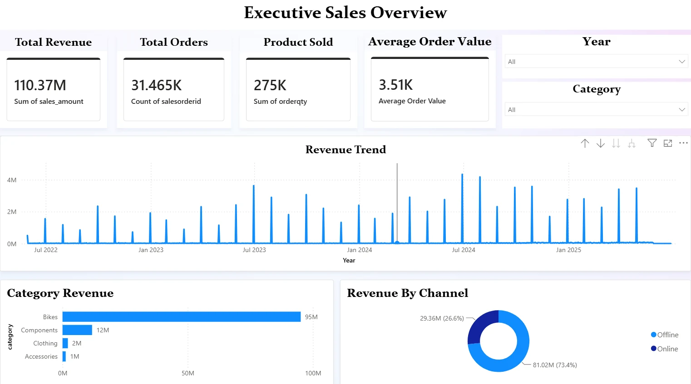
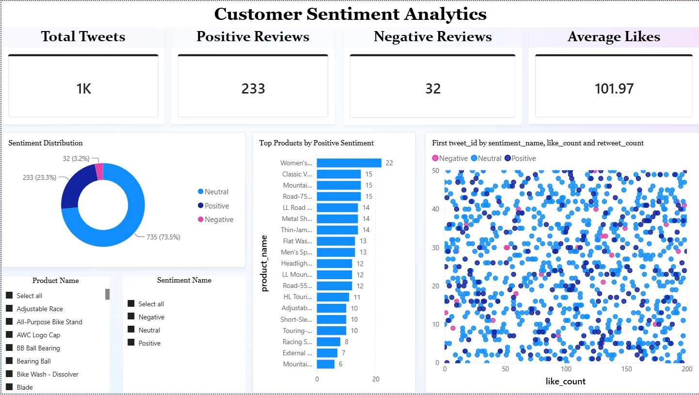
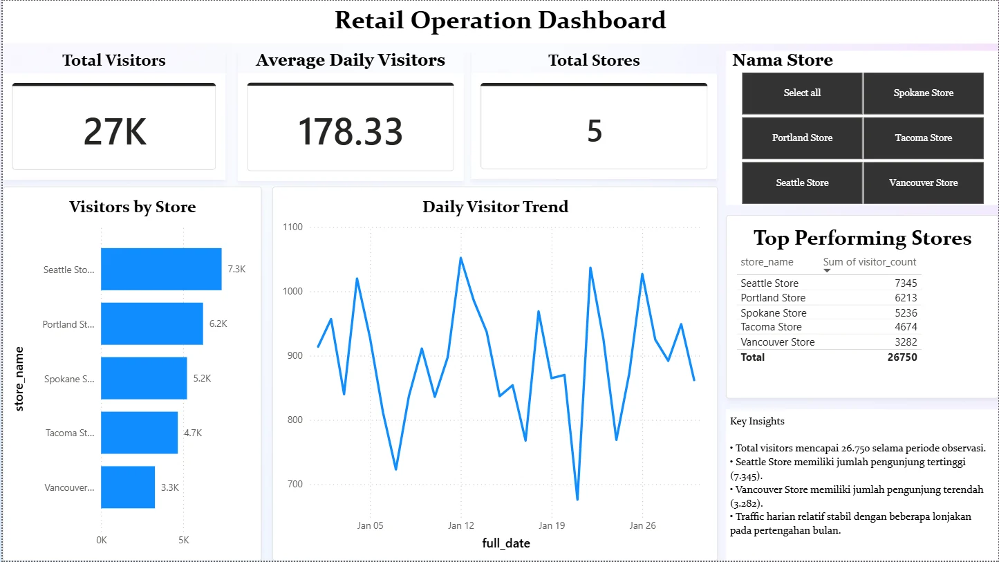
Self-learning project · Data warehousing
A Bronze–Silver–Gold warehouse built entirely in T-SQL. CRM and ERP data arrives as six CSV files, is cleaned and integrated through stored procedures, and ends as a star schema ready for reporting.
A bike-shop business keeps customers, products, and sales in a CRM, and extra customer and category details in an ERP. The goal: combine both into one clean, trustworthy model that analysts can query without worrying about inconsistent codes, stray spaces, or mismatched keys.
| System | File | Content | Rows |
|---|---|---|---|
| CRM | cust_info | Customers | 18,493 |
| CRM | prd_info | Products with price history | 397 |
| CRM | sales_details | Sales transactions | 60,398 |
| ERP | CUST_AZ12 | Birthdate and gender | 18,483 |
| ERP | LOC_A101 | Customer country | 18,484 |
| ERP | PX_CAT_G1V2 | Product categories | 35 |
The data is intentionally messy: stray spaces, one-letter codes, dates stored as integers, empty values, and keys formatted differently in each system.
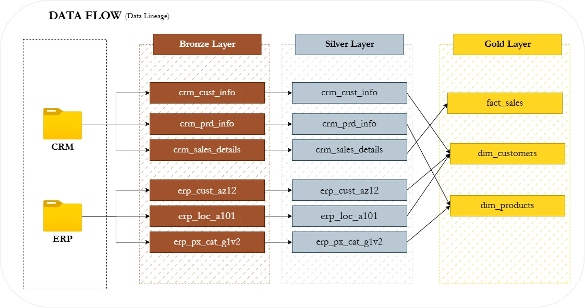
fact_sales, dim_customers, and dim_products. Click to enlarge.bronze.load_bronze
Raw tables loaded as-is from the CSV files.
BULK INSERTTRY…CATCH error reportingsilver.load_silver
Cleaned and standardized data, ready to join.
ROW_NUMBER)DATE and repair inconsistent sales and pricesgold.* views
Business-ready star schema exposed as views.
dim_customers merges CRM with ERP detailsdim_products keeps only current product versionsfact_sales links to both through surrogate keysEach layer has SQL checks that are expected to return no rows. They are what let me trust the model before anyone reports on it.
Team project · Data pipeline + machine learning
A pipeline that turns messy disaster-incident records into a modeling dataset: cleaned and geocoded at sub-district level, enriched with terrain and climate data from Google Earth Engine, then used to compare ten classifiers on an extremely imbalanced target.
Indonesia has one of the highest landslide rates in the world, yet vulnerability mapping is uneven and often reactive. This project builds a reproducible, open-data pipeline from raw incident records to a classifier that labels sub-districts as Low, Medium, or High vulnerability.
BNPB incident table
Location strings mixed district names, villages, and noise in inconsistent formats.
Nominatim (OpenStreetMap)
Turning district names into coordinates for spatial analysis.
Google Earth Engine Python API
Four environmental variables, each summarized in a 5 km buffer around every point.
The incident records contain no vulnerability class, so the label comes from a composite score. Each of the four variables is converted to a 0–2 score using thresholds adapted from the literature, and the scores are summed (0–8): Low is 0–2, Medium is 3–5, High is 6–8.
| Variable | Score 0 | Score 1 | Score 2 |
|---|---|---|---|
| Slope | ≤ 15° | 15°–30° | > 30° |
| Annual rainfall | ≤ 2,000 mm | 2,000–2,500 mm | ≥ 2,500 mm |
| Elevation | ≤ 200 m | 200–1,000 m | ≥ 1,000 m |
| Land cover | Scored by Copernicus class: closed forest is the most stable, built-up and sparse vegetation the least | ||
The label is a literature-based proxy used to train classifiers, not a validated hazard map. All four variables carry equal weight.
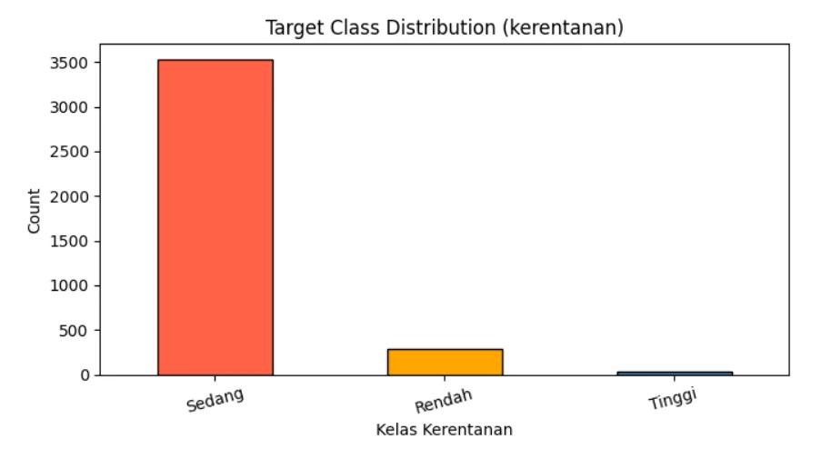
The modeling set has 14 features (four geospatial, six impact counts, two temporal, two administrative), split 80/20 with stratification into 3,076 training and 769 test rows. Outliers were capped with the IQR method instead of being dropped, and KNN and SVM received min-max scaling.
Leakage was prevented by design: resampling only touches training data, and during 5-fold cross-validation it runs inside an imbalanced-learn pipeline so each fold resamples on its own. The score columns used to build the label were also dropped from the feature set.
| Model | F1 (test) | F1 (5-fold CV) | High recall |
|---|---|---|---|
| XGBoost | 0.9870 | 0.9861 ± 0.0051 | 4 / 5 |
| LightGBM | 0.9867 | 0.9865 ± 0.0050 | 3 / 5 |
| Bagging | 0.9810 | 0.9804 ± 0.0054 | 5 / 5 |
| Random Forest | 0.9787 | 0.9819 ± 0.0042 | 1 / 5 |
| Decision Tree | 0.9773 | 0.9776 ± 0.0053 | 5 / 5 |
| Stacking | 0.9764 | 0.9744 ± 0.0078 | 5 / 5 |
| KNN | 0.9085 | 0.8993 ± 0.0104 | 4 / 5 |
| SVM | 0.8952 | 0.8882 ± 0.0077 | 4 / 5 |
| AdaBoost | 0.8437 | 0.6916 ± 0.2257 | 0 / 5 |
| Naive Bayes | 0.2642 | 0.3412 ± 0.0739 | 3 / 5 |
F1 is weighted. "High recall" counts the High-vulnerability test samples each model found (there are only five).
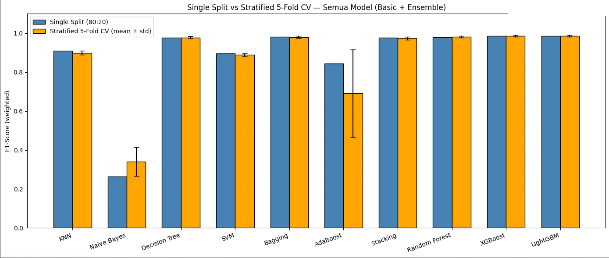
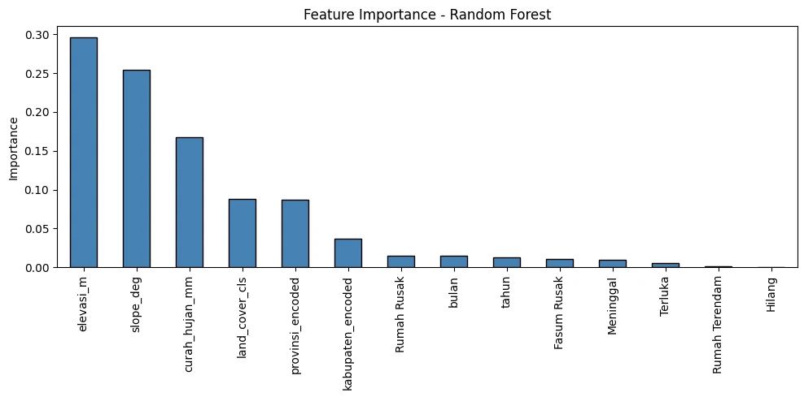
Team project · UX design
A mobile platform that connects buyers and sellers around scheduled food pre-orders. The work covers needfinding, five concept sketches, a medium-fidelity Figma prototype for two user roles, and a usability test with four participants.
Unlike instant food-delivery apps, DishUp! is built around pre-orders: food is produced and delivered on a schedule agreed in advance. The goal is to reduce miscommunication, make order status transparent, and help sellers organize production and delivery.
Value proposition: a connected pre-order process where buyers get what they need and sellers manage orders in a more orderly way.
Interviews and observation with people who buy or sell pre-order food surfaced pain points on both sides.
Five directions were sketched, each with task flows for a simple, a moderate, and a complex task: an integrated pre-order flow, chat-based ordering with a chatbot, a calendar-based system, a seller workflow dashboard, and a reorder system. Two designs made the final comparison.
The prototype supports two roles with separate navigation. Buyers explore sellers, view a product, check out into a preorder window, and follow the order through a tracking timeline. Sellers get an overview dashboard, order management with approve and reject, a "what to prepare" ingredient summary, a financial view with cost of goods, delivery management, and a chatbot that can answer customers automatically.
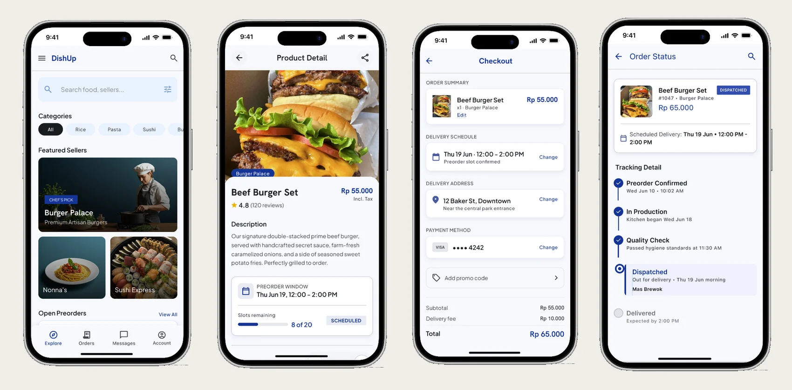
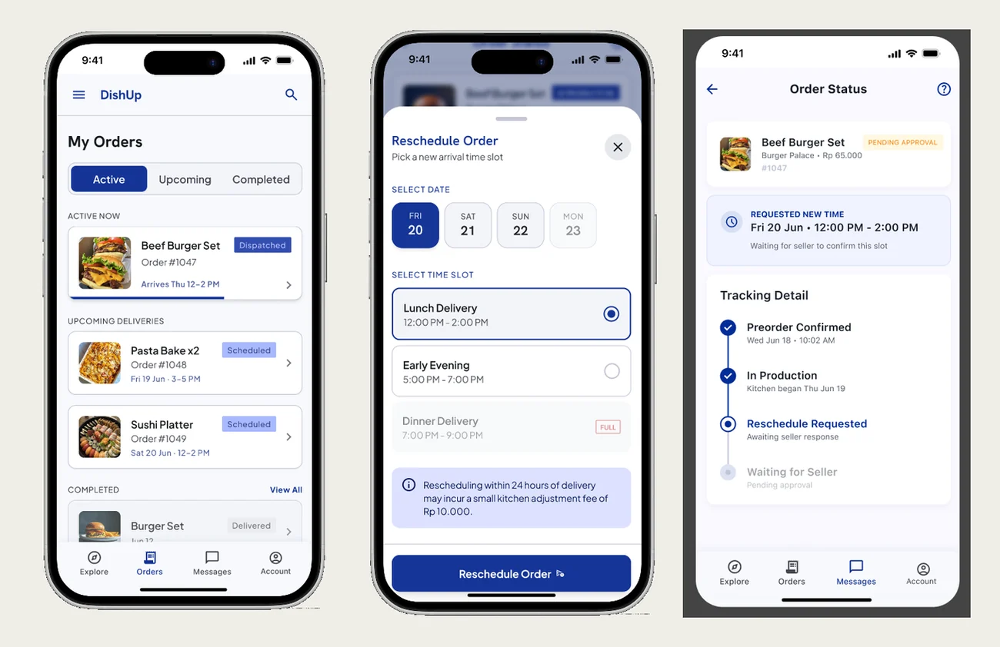
Four people who had bought or sold pre-order food (two buyers, two sellers) tested the interactive prototype in moderated Zoom sessions, thinking aloud while the team observed.
| Role | Tasks given |
|---|---|
| Buyer (5) | Buy a product through payment, chat with the seller, reschedule an order, update the profile, view order status |
| Seller (6) | Receive an order through delivery, turn on the chatbot, open a pre-order, manage delivery, add and edit a product, manage the store profile |
Each session had defined roles (facilitator, prototype operator, two observers, note taker, documentation), and problems were logged as critical incidents rated on a 0–4 severity scale.
| Finding | Severity |
|---|---|
| Checkout needs too many steps (address and payment before confirming) | 3 · major |
| Some buttons were not linked to any screen | 3 · major |
| Prototype flow incomplete, making the journey hard to follow | 3 · major |
| No way to go back or cancel while ordering | 2 · minor |
| English interface terms slowed understanding | 2 · minor |
| Seller overview ordering could surface key information sooner | 1 · cosmetic |
What worked: order and delivery management were easy for sellers to understand, tracking information was found without help, and the main navigation tasks were completed.